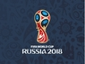
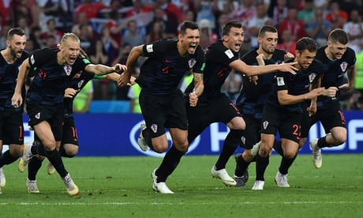
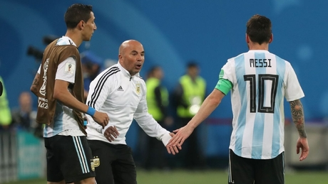
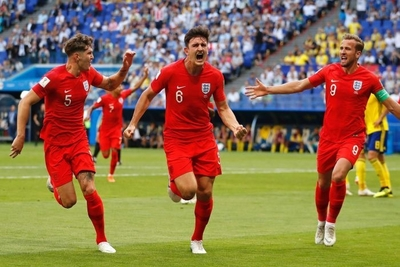
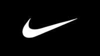
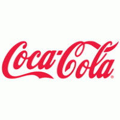
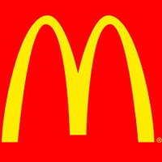

|  | FIFA WORLD CUP 2018 |
|  |  |  |
| Croatia celebrates after winning quarter finals in penalties | Messi's World Cup 2018 dreams left in tatters | England qualifies for the Semi Finals after 28 years |
Immense in size and spanning millennia in time, Russia is a land of magic. Its mystical and enchanting tales from years gone by will
combine with the heartfelt generosity and ambition of its people to welcome the world in 2018, in an unmatched atmosphere of warmth and hospitality.
Hosting the FIFA World Cup™ has been a long-held dream for millions of Russians. Bringing this world-class event to life will be seen
as a tremendous achievement by the whole country – one that will live long in the memories of its people.
Inspiration for the Official Emblem.
To creatively capture the essence of this remarkable, historic moment, inspiration was drawn from both Russia’s rich artistic tradition
and its history of bold achievement and innovation. Above all, Russia’s pioneering in space was a truly captivating theme.
The shape of the Official Emblem of Russia 2018 takes on the universally recognisable outline of the World Cup Trophy, while the bold use
of red, gold, black and blue in the emblem’s colour palette was inspired by centuries-old techniques seen in world-renowned Russian art
dating back to the earliest icon paintings.
The magic ball at the top of the emblem puts the world’s love of football into the spotlight. And the components of the emblem taken
together blend unique attributes of the World Cup and of Russia as host nation. It unites magic and dreams, as the competition will do
for millions of fans in 2018.
FIFA WORLD CUP™ SPONSORS
|  |  |  |